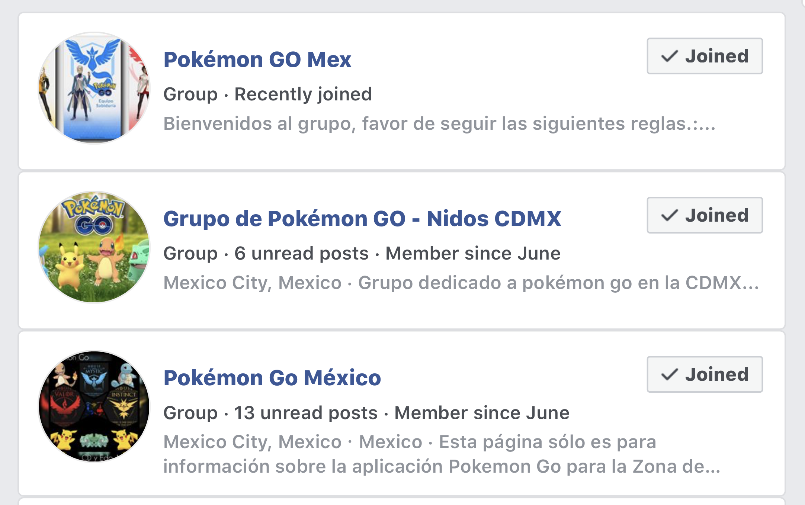
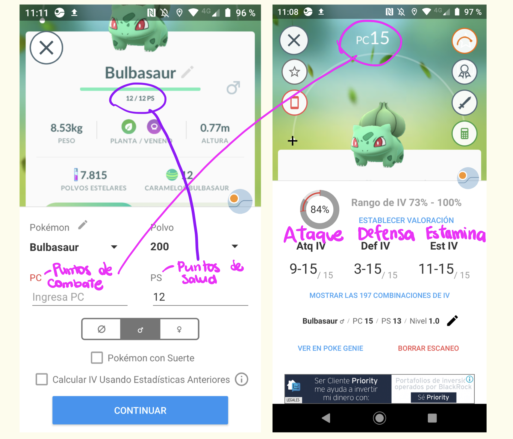
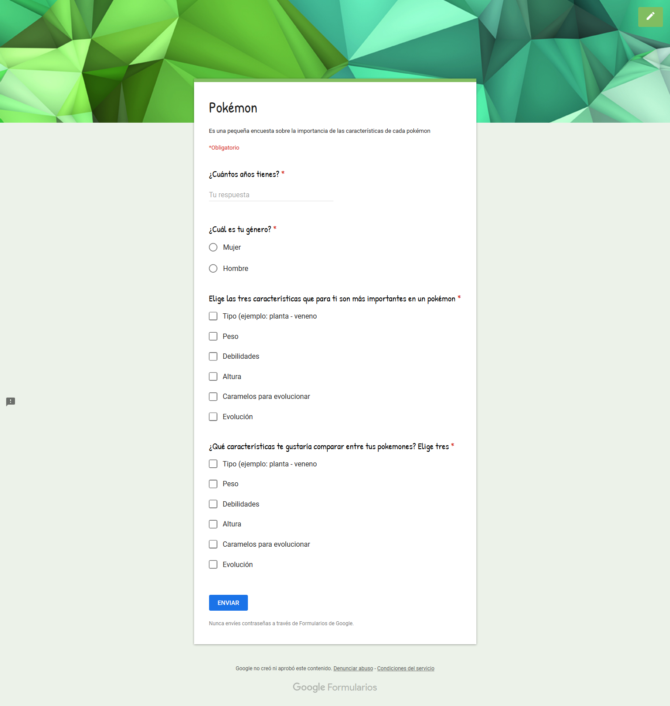
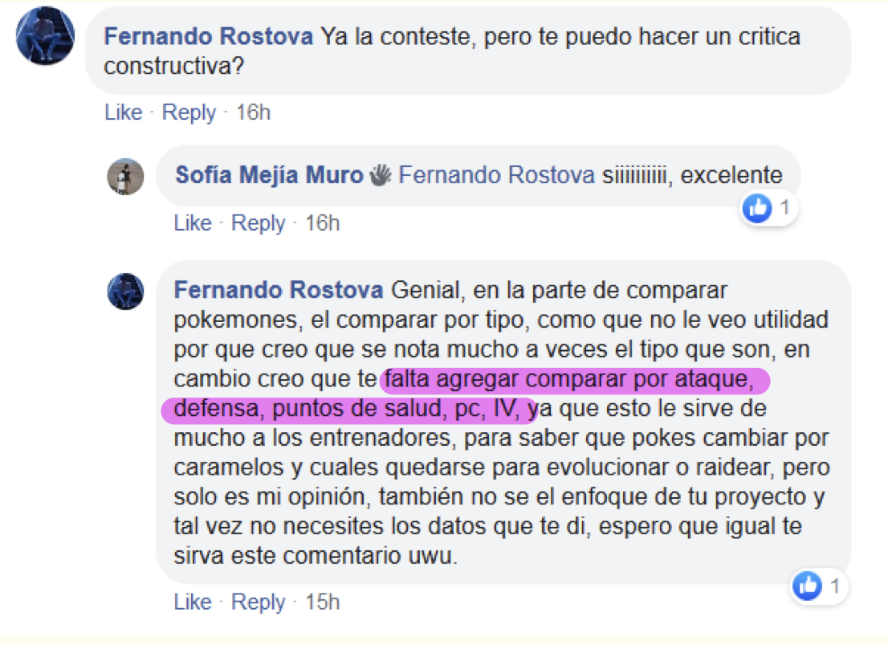
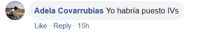
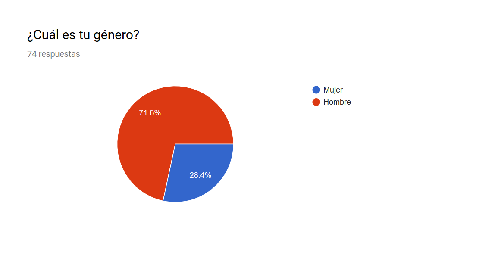
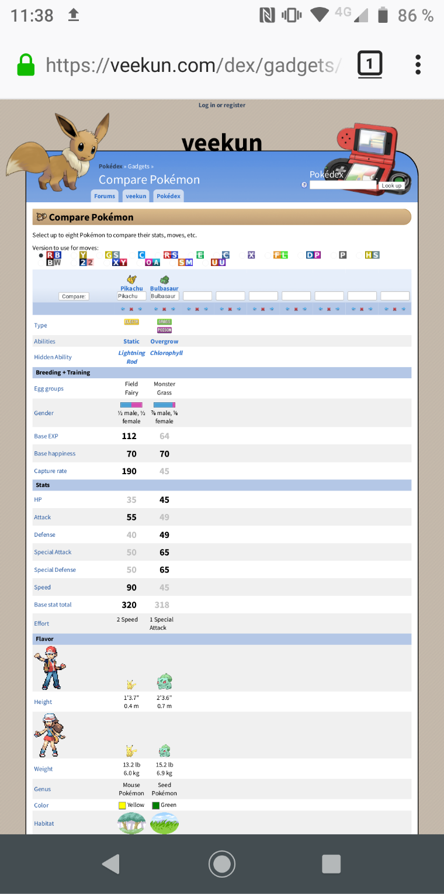
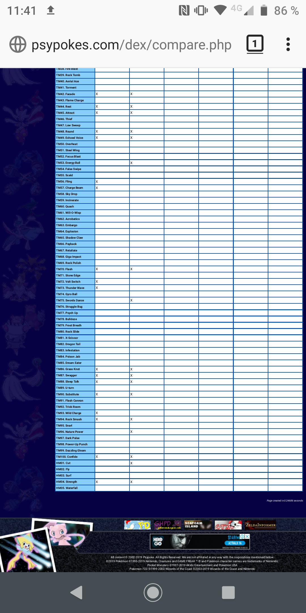
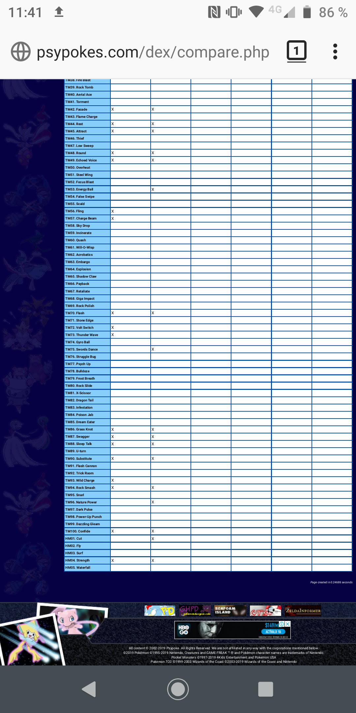

Para llevar acabo nuestra investigación usamos un poco de distintas metodologías, UX Research, Lean UX y Design Thinking. El primer paso fue elegir el tema , el que más nos llamó la atención fue Pokemon Go, una vez lo decidimos comenzamos a revisar la data proporcionada y a pensar en el usuario.
Nos descargamos la app Pokémon Go y salimos a cazar pokemones… ¡gajes del oficio!. La finalidad era familiarizarnos y conocer la dinámica del juego.
Para acercarnos a los usuarios nos integramos a tres comunidades de jugadores de Pokémon GO en Facebook.

Además hicimos una misión exploratoria a la Alameda Central de la CDMX, ahí realizamos dos entrevistas que nos dieron un punto de partida, nuestros informantes fueron muy claros con sus necesidades.
En resumen, las necesidades de los usuarios eran saber los Individual Values (IV) que son los valores individuales de cada pokémon; ataque, defensa y estamina (vida), datos útiles a la hora de combate y saber sobre los ataques de cada pokémon.
Al conocer las necesidades de los usuarios nuestro planteamiento fue hacer una página web que permitiera comparar esas características entre dos o tres ejemplares de pokémon.
Ahora que ya teníamos de dónde partir, contrastamos la data proporcionada en el archivo src con lo mostrado en la interfaz del juego.

Al revisar la data que se nos proporcionó y las necesidades que detectamos en las entrevistas… !Oh sorpresa! Nos dimos cuenta de que no se ajustaban,fue entonces que hicimos un poco de investigación en blogs y videos de youtube donde confirmamos que las necesidades que se expresaron en las entrevistas eran generalizadas. En este punto investigamos qué herramientas proporcionan una resolución a esas sugerencias, encontramos dos aplicaciones para Android y una para IOS, sin embargo ninguna de ellas compara los valores de los pokemones.

Estas aplicaciones te proporcionan el IV a partir del Poder de Combate (PC) y los Puntos de Salud (PS) de cada pokémon, ambos datos sí los proporciona la app POKÉMON GO sin embargo no están dentro de la data proporcionada en el src del proyecto Data Lovers.

En este punto teníamos dos opciones, meter los datos de los 151 pokemones manualmente nosotras o restringirnos a la data proporcionada. Por cuestiones de tiempo … y de salud mental optamos por la segunda.
En este punto entramos en una dinámica en la que lo que quiere el cliente, en este caso Laboratoria y el proyecto Data Lovers, no corresponde a las necesidades de los usuarios reales. En este caso particular de POKÉMON GO, el primer acercamiento que tuvimos para empatizar con el usuario y entenderlo nos arrojó una expectativa que no se cumpliría por que el cliente no contempla esa data. En el mundo real la app POKÉMON GO tampoco la proporciona en la interfaz del usuario, inclusive hay descontento en la comunidad por lo mismo. Mucho se habla de lo poco importante que es la información que te provee la app y la necesidad innecesaria de descargar otras apps para obtener información que te ayude a mejorar como jugador. La forma que encontramos para llevar a cabo nuestro proyecto a pesar de que no coincidían ambas necesidades fue ceñirnos a los datos y pasar por alto lo real.
Nuestro planteamiento fue ¿Qué de lo que hay disponible en la data del proyecto Data Lovers es importante para este juego? Como ya nos habíamos involucrado con el producto sabíamos que el tipo de pokémon, sus debilidades, sus evoluciones y los caramelos necesarios para evolucionar son características importantes a la hora de decidir con qué pokémon vamos a combatir.
Una vez reestablecido los valores con los que disponíamos decidimos formular y lanzar la encuesta, tomamos seis datos que sí aparecen en la data y le propusimos al encuestado elegir los tres más importantes, además de elegir qué le gustaría comparar, de esas características ya mencionadas, entre sus pokemones. Para definir a nuestro usuario le pedimos su edad y su género.
Teniendo esto en mente lanzamos nuestra encuesta a las comunidades de FB, decidimos que permanecería abierta desde el martes 25 de junio a las 6pm hasta el miércoles 26 de junio a la 10am.

La respuesta fue muy positiva en las comunidades de FB, incluso una de las administradoras compartió nuestra encuesta por grupos de WhatsApp, además nos agregó en un grupo de puras mujeres jugadoras de POKÉMON GO.
Sobre el grupo de WhatsApp nos gustaría hacer un comentario que vas más relacionado a esto que significa Laboratoria para las mujeres y la sociedad. Hay dos requisitos para ser aceptada en este grupo de sólo mujeres, citamos a la administradora que nos añadió “La primer regla es mucho respeto, y la segunda, y última es enviar un audio presentándonos y así verificamos ser chicas… porque es un juego predominantemente jugado por hombres y luego son muy manchados” , nos parece que es un tema que debe ser puntualizado en nuestros proyectos porque hacerlo notar es un paso para hacer un cambio.
Recibimos dos comentarios acerca de nuestra encuesta. El primero...

El segundo...

Como se puede notar, las necesidades de los usuarios son los IV, datos que tampoco proporciona la app POKÉMON GO.
Participaron en la encuesta 74 personas, a continuación mostramos lo obtenido.
Rangos de edad

Aquí podemos ver dos bloques bien diferenciados, el primero que va de los 18 a los 24 años y el segundo de los 28 a los 30, hay un dato que parece resolver el misterio de la edad de Chabelo al afirmar que tiene 9 mil años (aún por confirmar).
Género

Predominantemente jugado por hombres. Características principales de un pokémon

Para los encuestados el tipo de pokemón, su evolución y sus debilidades son las características más importantes.
Comparación

Respecto a lo que les gustaría comparar, los datos coinciden con las características más importantes; el tipo, la evolución y las debilidades.
Con las entrevistas, las encuestas y nuestra experiencia jugando seguimos con nuestra propuesta inicial de crear una web que permita visualizar las tres características más importantes de un pokémon (que tenemos disponibles) y hacer una comparación (éste es un cálculo agregado?) entre los mismos.
A continuación mostramos nuestro proceso para crear las historias de usuario, qué tarea épica nos crea y cuál sería la definition of done.

Las aplicaciones que existen en el mercado son principalmente para medir el IV de los pokemones, sin embargo ninguna de ellas lo hace de forma comparativa sino de forma individual.
En la web sí encontramos páginas que proporcionan información comparativa, bastante completa, sobre pokemones.
[Veekun] (https://veekun.com/dex/gadgets/compare_pokemon)

[Psypoke] (http://www.psypokes.com/dex/compare.php)

El problema sería que no hay una página web en la que sea fácil la visualización de la data en un teléfono, que es lo que el 100% de los usuarios usan para jugar POKÓMON GO, además de que la data proporcionada es mucha e irrelevante para su uso en los combates.
Visualización en un teléfono de las web mencionadas
En la primer página web se necesitaron tres capturas de pantalla para visualizar todo el contenido



En la segunda página web también se necesitaron tres capturas de pantalla…

 

Como se puede observar no se observa nada.
Nuestra propuesta resuelve el problema de la visualización de datos al solo mostrar los más relevantes para el usuario, tanto para un pokémon de forma individual como al hacer la comparativa.

Para hacer este prototipo utilizamos la herramienta marvel.
https://marvelapp.com/54dd82c/screen/58742576
En las primeras pruebas se integró la búsqueda por tipo, se agredo el valor "required" a el input de búsqueda por nombre. En las siguientes pruebas se hizo cambio de color siguiendo las recomendaciones de Dení.